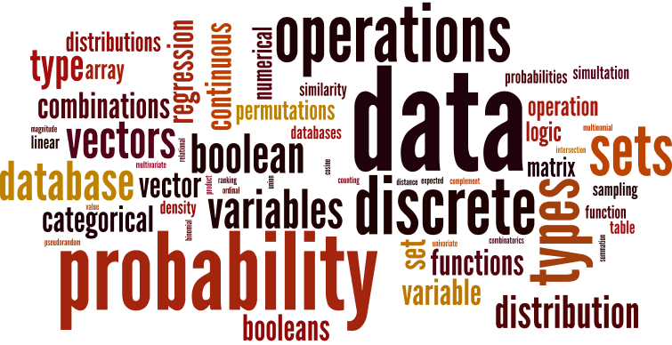

| Instructor: | Prof. Michael Paul | (Office hours: Tuesday/Thursday 1:00-2:15, TLC 266) |
| Canvas: | https://canvas.colorado.edu/courses/26226 (check for announcements, assignments, etc.) |
| Textbook: | Diez, Barr, Çetinkaya-Rundel (2015) OpenIntro Statistics, 3rd Edition. |
| Introduces methods for quantifying and analyzing different types of data, covering foundational concepts in discrete mathematics, probability, and predictive modeling, along with complementary computational skills to apply these concepts to real problems. Covers counting and combinatorics, set theory, introductory probability, common probability distributions, and regression. Requires demonstrated proficiency with introductory computer programming. |  |
| Prerequisites: |
|
| Lecture | Materials | Readings |
| Weeks 1-6: Data Types and Operations | ||
|
Monday, January 14, 2019
Introduction Course overview. Uncertainty and prediction. |
[slides] [syllabus] |
|
|
Wednesday, January 16, 2019
Data types and structures Basic variable types, discrete vs continuous. Vectors and sets. |
[notebook] |
|
|
Friday, January 18, 2019
Data types and structures Manipulating lists and sets in Python. Arrays and matrices. |
[notebook] | |
|
Monday, January 21, 2019
No class – Martin Luther King Jr. Day
|
||
|
Wednesday, January 23, 2019
Vectors Notation and terminology. Points, magnitude, distance. |
[notes] |
|
|
Friday, January 25, 2019
Vector operations Summation vs addition. Dot product and cosine similarity. |
[notebook] [notes1] [notes2] |
|
|
Monday, January 28, 2019
Mathematical typesetting Latex and Markdown in Jupyter. |
[notebook] [notes] |
|
|
Wednesday, January 30, 2019
Vector operations Application: ranking by similarity. |
[notebook] [notes] |
|
|
Friday, February 1, 2019
Vector operations More practice with vectors. |
[slides] | |
|
Monday, February 4, 2019
Sets Notation and terminology. Subsets and cardinality. |
[notebook] [notes1] [notes2] |
|
|
Wednesday, February 6, 2019
Set operations Union, intersection, difference, complement. |
[notebook] [notes1] [notes2] |
|
|
Friday, February 8, 2019
Set operations Enumerating sets. Algorithmic implementation of set operations. |
[notebook] | |
|
Monday, February 11, 2019
Set operations More practice with sets. |
[notebook] | |
|
Wednesday, February 13, 2019
Booleans Notation and terminology. Boolean variables and logic. |
[notebook] [notes] |
|
|
Friday, February 15, 2019
Boolean operations Generating truth tables. |
[notebook] [notes1] [notes2] |
|
|
Monday, February 18, 2019
Boolean operations More practice with booleans. Boolean operations as set operations. |
[notebook] [slides] |
|
|
Wednesday, February 20, 2019
Introduction to databases Matrix/vector representation of data tables. Relational databases. |
[notes1] [notes2] |
|
|
Friday, February 22, 2019
Database operations Brief introduction to structured query language (SQL). Practicing boolean operations in database queries. |
[BigQuery1] [BigQuery2] [BigQuery3] |
|
|
Monday, February 25, 2019
Database operations Practicing set operations in database joins. |
[query] [notes1] [notes2] |
|
| Weeks 7-13: Discrete Probability and Simulation | ||
|
Wednesday, February 27, 2019
Random variables Probability concepts and terminology. |
[slides] [notes1] [notes2] [notes3] |
|
|
Friday, March 1, 2019
Random variables Expected value. |
[notebook] |
|
|
Monday, March 4, 2019
Simulation Sampling random values. |
[notebook] [notes1] [notes2] |
|
|
Wednesday, March 6, 2019
Simulation Pseudorandom number generation. |
[notebook] [notes] |
|
|
Friday, March 8, 2019
Simulation Practice with generating pseudorandom values. |
[notebook] |
|
|
Monday, March 11, 2019
Events Random outcomes as sets. Addition and multiplication rules. |
[notebook] [notes] |
|
|
Wednesday, March 13, 2019
Events Independence. |
|
|
|
Friday, March 15, 2019
Events Joint distributions and marginalization. |
[notebook] [notes1] [notes2] |
|
|
Monday, March 18, 2019
Conditional probability General multiplication rule. |
[notebook] [notes1] [notes2] |
|
|
Wednesday, March 20, 2019
Conditional probability Review: joint, marginal, conditional probabilities. |
[notes1] [notes2] |
|
|
Friday, March 22, 2019
Conditional probability Application: generating music. |
[notebook] [notes1] [notes2] |
|
|
Monday, March 25, 2019
No class – Spring Break
|
||
|
Wednesday, March 27, 2019
No class – Spring Break
|
||
|
Friday, March 29, 2019
No class – Spring Break
|
||
|
Monday, April 1, 2019
Review Day Practice problems. |
[notes1] [notes2] [notes3] [notes4] |
|
|
Wednesday, April 3, 2019
Review Day Practice problems. |
[notes1] [notes2] |
|
|
Friday, April 5, 2019
Midterm Exam
|
||
|
Monday, April 8, 2019
Bayes' theorem Review rules of conditional probability and marginalization. |
[notes] |
|
|
Wednesday, April 10, 2019
Bayes' theorem Practice problems. |
[notes1] [notes2] [notes3] |
|
|
Friday, April 12, 2019
Bayes' theorem Application: spam classification. |
[notebook] [data] |
|
| Weeks 14-16: Combinatorics and Count Distributions | ||
|
Monday, April 15, 2019
Combinatorics Introduction. Examples of combinations vs permutations. |
[notebook] [notes] |
|
|
Wednesday, April 17, 2019
Permutations Explanations and formulas. |
[notes1] [notes2] [notes3] |
|
|
Friday, April 19, 2019
Combinations Explanations and formulas. |
[notebook] [notes] |
|
|
Monday, April 22, 2019
Combinatorics Review and practice. |
||
|
Wednesday, April 24, 2019
Binomial distribution Definition and examples. |
[notebook] [notes] |
|
|
Friday, April 26, 2019
Binomial distribution Formulas and practice. |
[notes1] [notes2] [notes3] |
|
|
Monday, April 29, 2019
Review Day Practice problems. |
[notes1] [notes2] |
|
|
Wednesday, May 1, 2019
Review Day Practice problems. |
[notes] | |
|
Friday, May 3, 2019
No class – Last day of classes is Thursday, May 2
|
||
| Week 17: Final Exam Period | ||
|
Tuesday, May 7, 2019
Final Exam 4:30pm–7:00pm in MUEN E113 (standard location) |
|
|
![[notes]](files/whiteboard_1-24-19.jpg){kind=link}
![[notes1]](files/whiteboard_1-25-19.jpg){kind=link}
![[notes2]](files/whiteboard_1-30-19.jpg){kind=link}
![[notes]](files/whiteboard_1-28-19.jpg){kind=link}
![[notes1]](files/whiteboard_2-4-19a.jpg){kind=link}
![[notes2]](files/whiteboard_2-4-19b.jpg){kind=link}
![[notes1]](files/whiteboard_2-6-19a.jpg){kind=link}
![[notes2]](files/whiteboard_2-6-19b.jpg){kind=link}
![[notes]](files/whiteboard_2-13-19.jpg){kind=link}
![[notes1]](files/whiteboard_2-15-19a.jpg){kind=link}
![[notes2]](files/whiteboard_2-15-19b.jpg){kind=link}
![[notes1]](files/whiteboard_2-20-19a.jpg){kind=link}
![[notes2]](files/whiteboard_2-20-19b.jpg){kind=link}
![[notes1]](files/whiteboard_2-25-19a.jpg){kind=link}
![[notes2]](files/whiteboard_2-25-19b.jpg){kind=link}
![[notes1]](files/whiteboard_2-27-19a.jpg){kind=link}
![[notes2]](files/whiteboard_2-27-19b.jpg){kind=link}
![[notes3]](files/whiteboard_2-27-19c.jpg){kind=link}
![[notes1]](files/whiteboard_3-4-19a.jpg){kind=link}
![[notes2]](files/whiteboard_3-4-19b.jpg){kind=link}
![[notes]](files/whiteboard_3-6-19.jpg){kind=link}
![[notes]](files/whiteboard_3-11-19.jpg){kind=link}
![[notes1]](files/whiteboard_3-15-19a.jpg){kind=link}
![[notes2]](files/whiteboard_3-15-19b.jpg){kind=link}
![[notes1]](files/whiteboard_3-18-19a.jpg){kind=link}
![[notes2]](files/whiteboard_3-18-19b.jpg){kind=link}
![[notes1]](files/whiteboard_3-20-19a.jpg){kind=link}
![[notes2]](files/whiteboard_3-20-19b.jpg){kind=link}
![[notes1]](files/whiteboard_3-22-19a.jpg){kind=link}
![[notes2]](files/whiteboard_3-22-19b.jpg){kind=link}
![[notes1]](files/whiteboard_4-1-19a.jpg){kind=link}
![[notes2]](files/whiteboard_4-1-19b.jpg){kind=link}
![[notes3]](files/whiteboard_4-1-19c.jpg){kind=link}
![[notes4]](files/whiteboard_4-1-19d.jpg){kind=link}
![[notes1]](files/whiteboard_4-3-19a.jpg){kind=link}
![[notes2]](files/whiteboard_4-3-19b.jpg){kind=link}
![[notes]](files/whiteboard_4-8-19.jpg){kind=link}
![[notes1]](files/whiteboard_4-10-19a.jpg){kind=link}
![[notes2]](files/whiteboard_4-10-19b.jpg){kind=link}
![[notes3]](files/whiteboard_4-10-19c.jpg){kind=link}
![[notes]](files/whiteboard_4-15-19.jpg){kind=link}
![[notes1]](files/whiteboard_4-17-19a.jpg){kind=link}
![[notes2]](files/whiteboard_4-17-19b.jpg){kind=link}
![[notes3]](files/whiteboard_4-17-19c.jpg){kind=link}
![[notes]](files/whiteboard_4-19-19.jpg){kind=link}
![[notes]](files/whiteboard_4-24-19.jpg){kind=link}
![[notes1]](files/whiteboard_4-26-19a.jpg){kind=link}
![[notes2]](files/whiteboard_4-26-19b.jpg){kind=link}
![[notes3]](files/whiteboard_4-26-19c.jpg){kind=link}
![[notes1]](files/whiteboard_4-29-19a.jpg){kind=link}
![[notes2]](files/whiteboard_4-29-19b.jpg){kind=link}
![[notes]](files/whiteboard_5-01-19.jpg){kind=link}